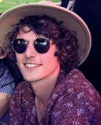

Name: Bradley PaveyStudent Number: S3548357Representing Group: Nu RecruITsAbout Bradley:
A bit more of background on myself is, I played sport from the age of seven to eight years old. Until I was seventeen years old. I played basketball as a point guard and I played almost everyday of the week, most weekends I would play between three to four games all at separate stadiums as well as train and play more games during the week. I would be a leader on the court, running team plays, giving other players confidence to take an opportunity when they are open for it. I was known for my defensive skills, ball control, ability to read and run a play. I would call out our defense strategy on the court in real time, back myself and the team in. I learned to be a referee of the sport as well. I would always play right on the edge sometimes being fouled out. I would play aggressive but fair, with mind games involved as a separate aspect of game to get in my opponents heads.
What do these results mean to me?
- To be honest I think they hit the marker bang on in some areas such as logical thinking, in a way such as I will always think about the issue at hand and not just try to solve the issue but stop the issue from reoccurring. In forming a team and my behavior towards a team I think my current method is okay. I am okay with being myself and everyone being their selves. I am happy to take in what people are saying and will speak up when needed. When I was a manager in retail I would do exactly this except I would listen to what my team members would have to say and then judge by the most logical outcome.
- Learning style. My Scores: Auditory: 35% Visual: 35% Tactile: 30%
- Personality test. Personality type results: Commander (ENTJ-A) Traits: Extraverted – 60%, Intuitive – 61%, Thinking – 53%, Judging – 79%, Assertive – 79% Role: Analyst Strategy: People Mastery
- Big 5 test. Results: Conscientiousness – Low Characteristics, Agreeableness – Medium Characteristics, Openness to Experience – Medium Characteristics, Extraversion – Low Characteristics and Neuroticism – Medium Characteristics
Click here to view Bradley's profile results.
Name: Lachlan JensenStudent Number: S3922643Representing Group: Nu RecruITsAbout Lachlan:My name is Lachlan Jensen, and I am part of the nuRecruITs team. I was born in Melbourne, Victoria. Throughout my childhood, my family travelled a lot due to my father’s occupation. This led to me completing the majority of my schooling outside of Australia, in countries such as Switzerland, Malaysia and the United States. During this time abroad it allowed me to experience many different cultures and meet some extremely interesting people. I think that this experience helps me relate to a wide range of people and has helped me get the most out of life. My favourite hobbies are Music, PC gaming and Anime/Manga. I learnt the Guitar and Piano from an early age from my grandmother and I have been playing since then. Music is a huge part of my life, and I couldn’t imagine spending a whole day away from my guitar. I first became interested in IT from playing computer games at an early age and have recently begun to formalise my knowledge by completing my Diploma in Information Technology Networking, I am now studying at RMIT to get a degree and to continue to build my skills.

I believe that these results show that I can be a very effective member of a team, I can learn in a mixed variety of styles, and I have a very good work ethic, I am an easy person to talk to and if I see someone struggling, I feel obliged to help. I work very well in a team however I work most effectively when directed by a leader figure, with clear goals and direction. The aspect I have to work on is my emotional stability and stress management, in a team this is extremely important and can be the deciding factor between a successful team and dysfunctional one.
Click here to view Lachlans profile results.
Name: Nicholas RichardsStudent Number: S3923381Representing Group: Nu RecruITsAbout Nicholas:
I work as a professional firefighter and live in the NSW Southern Highlands. I am a nerd in a jock's body: I love to lift weights and carve up a touch footy field, but prefer to play a board game or talk philosophy and history than watch cricket or have a beer at the pub. I dabbled in coding as my first 'lockdown hobby' of 2020 and was instantly hooked on the dopamine dump I received when the machine did what I instructed it to. I love the logic, precision and predictability of programming, and the tricks you can learn to make your code more attractive, efficient and powerful.
I am a turbulent architect personality type, so I am insightful and analytical, but shy and doubtful. I make an excellent contributor in a small group, producing high calibre work and able to see perspectives others may miss. I struggle in larger groups or leadership roles, and work best under an engaging and encouraging leader who draws me out of my introversion to share my thoughts. I have some affinity for all three learning styles, so it is important that I try to incorporate auditory, visual and kinesthetic components. This may be beneficial in the group as I am able to translate an idea from one learning style to another and boost the understanding of the whole team. The Big 5 personality test revealed that I am high in openness and agreeableness, so I will be a supportive team member, receptive to the ideas of others, and work hard to see those ideas realised.

Name: Jeremy BakerStudent Number: S3491116Representing Group: Nu RecruITsAbout Jeremy:
Name: Jacob BrakespeareStudent Number: S3921370Representing Group: Nu RecruITsAbout Jacob:
Name: Anthony NamroudStudent Number: S3925380Representing Group: Nu RecruITsAbout Anthony:Hi, I’m Anthony, at a young age my passion for information technology (IT) which started in gaming, HTML programming, CSS formatting and the use of Microsoft (MS) Excel (including macros). My favourite hobbies include, spending time with family, camping, fishing, designing my own MS Excel budgeting platform and watching YouTube. I have no current experience in IT, though my interest in IT grew out of self-learning and to seek a change in my career from working in a warehouse, then to achieve my goal of getting my job of interest in Cyber Security.

Even though I am happy being seen as an assertive protagonist, these results show some areas that I could work on with some development gained through experience, such as my nature, energy, and tactics. I could show more of a focus on the thinking side and less on the feeling side when it comes to my nature, my energy needs to have more of a spontaneous approach and my tactics should be less judging and promote a more of an inviting approach. Given my current results I feel this could impact my team’s behaviour in a negative way and I will work towards developing these skills and experiences, to help with my efforts in team cooperation and progression, not only showing benefits as an individual, but also advancing my team’s morals in achieving main goals.
Click here to view Anthonys profile results.